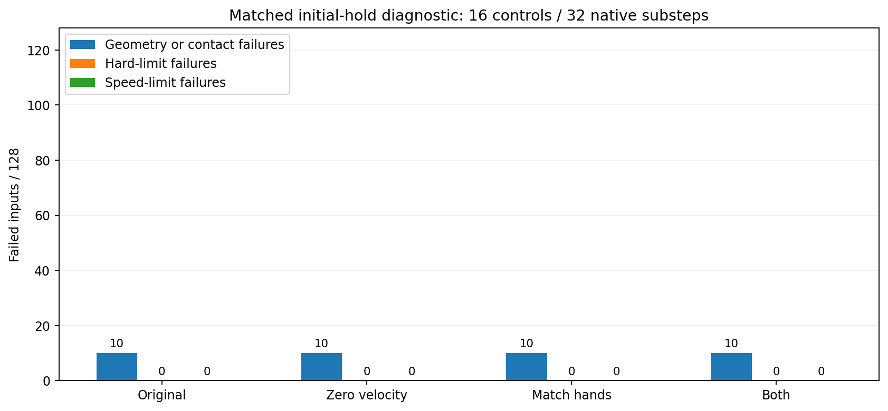
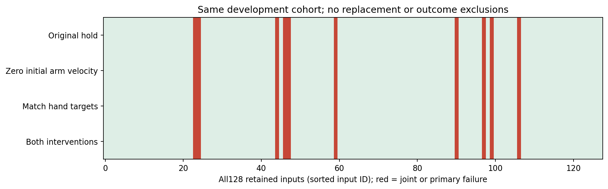
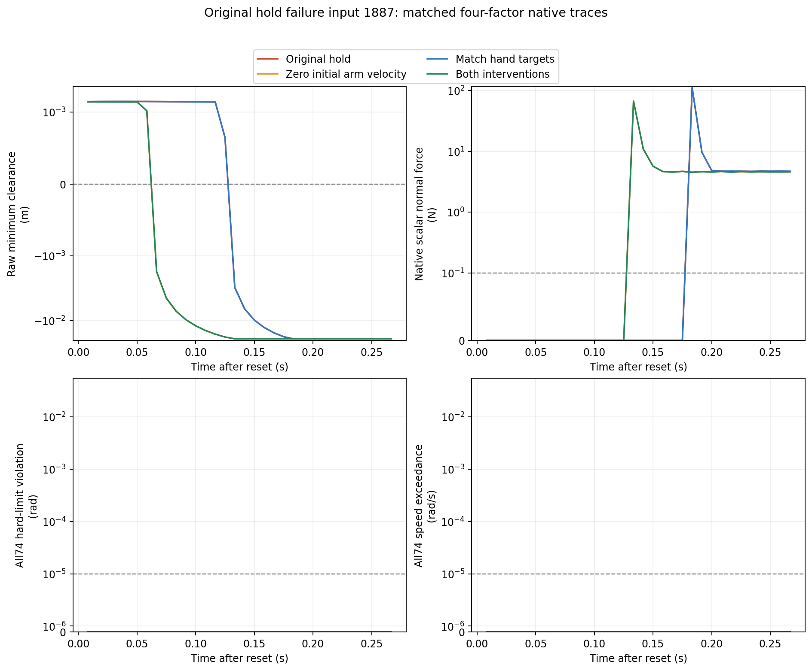

这轮仅诊断最初 16 个控制周期（32 个原生物理步，约 0.267 秒），不是 480 周期的安全改进结果。置零初始速度是仿真初态干预，不能当作运行时刹车。动作抑制不等于任务成功。
沿用上一轮全部 128 个初始姿态与分组。每组始终发出初始臂关节位置，保留原始 6 周期指令延迟；只改变初始臂速度或夹爪保持目标。原样保持组已精确复现旧实验前 16 周期的全部关节状态、指令队列、几何与接触力指标，10 条早期失败均复现。四组原生执行与独立审计全部完成。
这是根据已发现失败设计的开发集机制诊断，非盲测或正式留出验收。位置迭代 64、速度迭代 0、夹爪限位余量 0.03 rad；同一批 128 输入均保留，没有结果筛选或替换。
四组均为 118/128 联合通过，同样的 10 条几何失败和 1 条接触失败仍存在。两项干预单独或同时实施均未解除任何一条原始失败。初始臂速度置零后峰值法向力从 111.74 N 降至 67.41 N，但仍超过 0.1 N 判据。不能把降低接触力当作通过安全验收。
需要继续检查保持过程的实际动力学、执行器响应和碰撞位置；这轮没有验证新的可执行制动策略。
联合通过要求所有 32 个已记录物理步：9,021 条原始几何距离 ≥0；82 个碰撞刚体的原生点接触标量法向力 ≤0.1 N；全部 74 关节硬限位与限速超量 ≤10⁻⁵。离散步通过不能证明连续时间安全。


输入 1887；四组均显示全部 32 个物理步。

下面包括八次原生运行的全部 32 步几何、原生点接触、动力学与指令记录，以及参数、初态、协议、独立审计和原样复现证明。身份 JSON 采用 gzip 无损压缩；解压后原始字节 SHA256 也列在清单中。旧 480 周期原始大归档仍按旧报告范围保留。
SVG 格式修正的逐图语义证明 · 修正脚本
本轮改变仿真初始条件，只能帮助定位保持失败机制。实际系统需要在延迟队列与非零速度下验证可执行的制动方案、预测到达状态，并验证有用动作；随后还要测试真实物体感知、夹持与四臂协同任务。没有物体、训练策略、真实硬件或完整 System 0 验收结论。